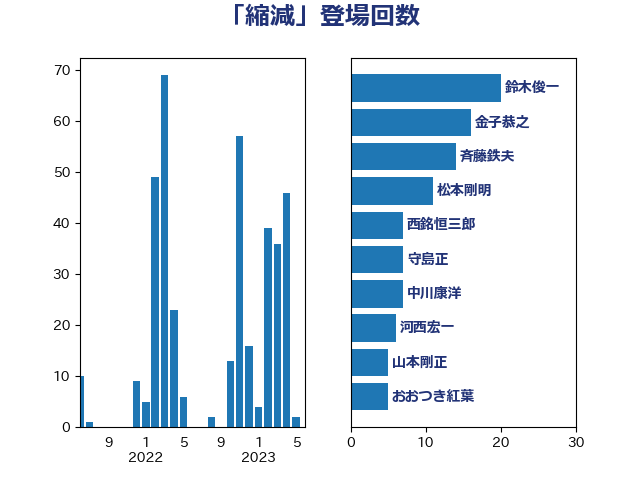

単語「縮減」

| 鈴木俊一 | 自由民主党 | 20 回 |
| 金子恭之 | 自由民主党 | 16 回 |
| 斉藤鉄夫 | 公明党 | 14 回 |
| 松本剛明 | 自由民主党 | 11 回 |
| 西銘恒三郎 | 自由民主党 | 7 回 |
| 守島正 | 日本維新の会 | 7 回 |
| 中川康洋 | 公明党 | 7 回 |
| 河西宏一 | 公明党 | 6 回 |
| 山本剛正 | 日本維新の会 | 5 回 |
| おおつき紅葉 | 立憲民主党 | 5 回 |
| 岸田文雄 | 自由民主党 | 4 回 |
| 岡本あき子 | 立憲民主党 | 4 回 |
| 寺田稔 | 自由民主党 | 4 回 |
| 加藤勝信 | 自由民主党 | 4 回 |
| 中司宏 | 日本維新の会 | 4 回 |
| 西村康稔 | 自由民主党 | 3 回 |
| 田畑裕明 | 自由民主党 | 3 回 |
| 源馬謙太郎 | 立憲民主党 | 3 回 |
| 早稲田ゆき | 立憲民主党 | 3 回 |
| 岬麻紀 | 日本維新の会 | 3 回 |
| 山岸一生 | 立憲民主党 | 3 回 |
| 伊藤岳 | 日本共産党 | 3 回 |
| 中西祐介 | 自由民主党 | 3 回 |
| 野田国義 | 立憲民主党 | 2 回 |
| 舞立昇治 | 自由民主党 | 2 回 |
| 石橋通宏 | 立憲民主党 | 2 回 |
| 田村まみ | 国民民主党 | 2 回 |
| 片山大介 | 日本維新の会 | 2 回 |
| 浜田靖一 | 自由民主党 | 2 回 |
| 柳本顕 | 自由民主党 | 2 回 |
| 東徹 | 日本維新の会 | 2 回 |
| 末松信介 | 自由民主党 | 2 回 |
| 打越さく良 | 立憲民主党 | 2 回 |
| 後藤茂之 | 自由民主党 | 2 回 |
| 川田龍平 | 立憲民主党 | 2 回 |
| 山本博司 | 公明党 | 2 回 |
| 小沢雅仁 | 立憲民主党 | 2 回 |
| 小林史明 | 自由民主党 | 2 回 |
| 塩田博昭 | 公明党 | 2 回 |
| 吉田統彦 | 立憲民主党 | 2 回 |
| 古賀友一郎 | 自由民主党 | 2 回 |
| 伊佐進一 | 公明党 | 2 回 |
| 井野俊郎 | 自由民主党 | 2 回 |
| 下野六太 | 公明党 | 2 回 |
| ながえ孝子 | 無所属 | 2 回 |
| 齋藤健 | 自由民主党 | 1 回 |
| 高橋千鶴子 | 日本共産党 | 1 回 |
| 高木かおり | 日本維新の会 | 1 回 |
| 青柳陽一郎 | 立憲民主党 | 1 回 |
| 阿部司 | 日本維新の会 | 1 回 |
| 長谷川英晴 | 自由民主党 | 1 回 |
| 長友慎治 | 国民民主党 | 1 回 |
| 鈴木義弘 | 国民民主党 | 1 回 |
| 道下大樹 | 立憲民主党 | 1 回 |
| 輿水恵一 | 公明党 | 1 回 |
| 菅義偉 | 自由民主党 | 1 回 |
| 芳賀道也 | 国民民主党 | 1 回 |
| 緑川貴士 | 立憲民主党 | 1 回 |
| 篠原孝 | 立憲民主党 | 1 回 |
| 笠井亮 | 日本共産党 | 1 回 |
| 竹詰仁 | 国民民主党 | 1 回 |
| 稲津久 | 公明党 | 1 回 |
| 石川香織 | 立憲民主党 | 1 回 |
| 白石洋一 | 立憲民主党 | 1 回 |
| 牧山ひろえ | 立憲民主党 | 1 回 |
| 渡辺猛之 | 自由民主党 | 1 回 |
| 清水真人 | 自由民主党 | 1 回 |
| 沢田良 | 日本維新の会 | 1 回 |
| 永岡桂子 | 自由民主党 | 1 回 |
| 横沢高徳 | 立憲民主党 | 1 回 |
| 柳ヶ瀬裕文 | 日本維新の会 | 1 回 |
| 末次精一 | 立憲民主党 | 1 回 |
| 早坂敦 | 日本維新の会 | 1 回 |
| 日下正喜 | 公明党 | 1 回 |
| 斎藤アレックス | 国民民主党 | 1 回 |
| 徳永久志 | 立憲民主党 | 1 回 |
| 後藤祐一 | 立憲民主党 | 1 回 |
| 平林晃 | 公明党 | 1 回 |
| 岸真紀子 | 立憲民主党 | 1 回 |
| 岩本剛人 | 自由民主党 | 1 回 |
| 宮本岳志 | 日本共産党 | 1 回 |
| 室井邦彦 | 日本維新の会 | 1 回 |
| 天畠大輔 | れいわ新選組 | 1 回 |
| 国定勇人 | 自由民主党 | 1 回 |
| 古川禎久 | 自由民主党 | 1 回 |
| 佐藤英道 | 公明党 | 1 回 |
| 住吉寛紀 | 日本維新の会 | 1 回 |
| 伊藤達也 | 自由民主党 | 1 回 |
| 井坂信彦 | 立憲民主党 | 1 回 |
| 井原巧 | 自由民主党 | 1 回 |
| 井上貴博 | 自由民主党 | 1 回 |
| 丸川珠代 | 自由民主党 | 1 回 |
| 中島克仁 | 立憲民主党 | 1 回 |
| 下条みつ | 立憲民主党 | 1 回 |
| 上田清司 | 国民民主党 | 1 回 |
| 上田勇 | 公明党 | 1 回 |